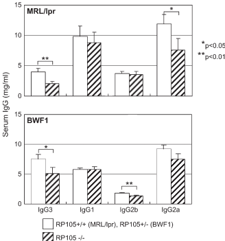
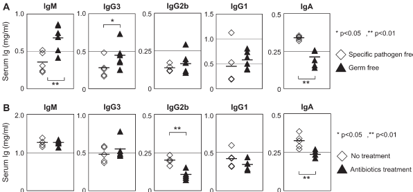

Fig. 3. 혈청 IgG3은 미생물 균총의 감소에 영향을 받지 않는다. 7주령 ICR 마우스에서 특정 병원체 없는 상태(open diamond) 또는 무균 상태(closed triangle)에서 자란 마우스 또는 8주령 BALB/c 마우스에서 4~8주령 동안 항생제를 섭취한(closed triangle) 또는 섭취하지 않은(open diamond) 마우스에서 혈청을 수집했다. 혈청 IgM, IgG3, IgG2b, IgG1 및 IgA의 수치는 ELISA를 통해 측정되었다. 결과는 개별 값과 6마우스(A) 또는 5마우스(B)에서 수평 막대로 표시된 평균값으로 나타냈다. 무균 마우스를 사용한 실험은 한 번만 수행되었으며, 항생제 처리는 독립적으로 세 번 수행되었으며 유사한 결과를 보였다. *P < 0.05, **P < 0.01.

RP105 결핍은 DNTC의 총 수를 감소시키는 것으로 보였으나, RP105 결핍이 췌장에서 DNTC의 비율에 영향을 미치지는 않았다(Fig. 6A 및 B). 췌장 B 세포의 활성화 상태는 CD44 및 CD69의 세포 표면 염색을 통해 분석되었으며, RP105의 존재 여부와 상관없이 차이를 보이지 않았다(Fig. 6D). 반면, MRL/lpr 마우스에서 RP105가 없을 경우 중간엽 림프절의 CD44+/CD4+ 활성화 T 세포 수가 유의하게 감소했다(Fig. 6E).
RP105의 부족은 자가항체 생성에 영향을 미치지 않는다
마지막으로, 우리는 DNA 및 염색체에 대한 자가항체 생성을 연구했다. 예상치 않게, RP105−/− 및 RP105+/+ MRL/lpr 마우스 간에 유의한 차이를 발견하지 못했다(Fig. 7). Kikuchi 등(32)은 IgG2a RF에 대한 IgG3 항체를 발현하는 전유전자 마우스가 신장의 작은 및 중간 크기 동맥에서 괴사성 동맥염을 발병한다고 보고했다. 따라서, 우리는 ELISA를 통해 혈청 IgG3 anti-IgG2a RF 수치를 측정했다(Fig. 8). RP105−/− MRL/lpr 마우스에서 괴사성 동맥염이 개선되더라도 IgG3 anti-IgG2a RF 활성의 감소는 관찰되지 않았다. RP105는 MRL/lpr 마우스의 신장에서 괴사성 동맥염 형성에 병태학적 역할을 할 가능성이 있으나, IgG3 anti-IgG2a RF는 RP105에 의존적인 동맥염과 관련이 없는 것으로 보인다.
토론
본 연구는 병원체 감지자인 TLR2, TLR4 및 RP105/MD-1에 의해 B 세포가 항상성으로 활성화된다는 것을 보여주었다. 지속적인 B 세포 활성화는 γ3 균주 전사체의 유도 및 혈청 IgG3의 생성을 초래한다. 이전 연구(16)에서, 우리는 항원 특이적이고 T 세포 독립적인 Ig 생성이 TLR2/4 리간드에 의해 주도되며, 이는 모두 RP105에 의존적임을 보여냈다. RP105/MD-1이 혈청 Ig 생성에 미치는 역할은, T 세포 독립적 B 세포 활성화보다는 IgG3에 더 특이적일 가능성이 있다.
